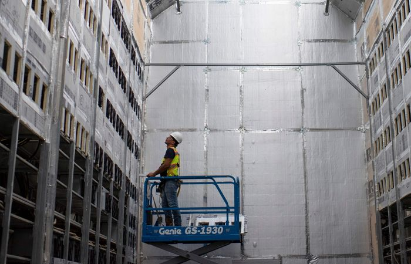

April 24, 2022

A consortium of environmental groups launched a campaign on Monday seeking to change b itcoin’s code to decrease its energy use, which has grown substantially in the past few years.
Bitcoin is popular among some investors, but its energy use has riled environmental groups, alarmed some lawmakers, and put the cryptocurrency at odds with a green movement that has some supporters on Wall Street. The new campaign aims to persuade people involved with the cryptocurrency, from mining companies to investors to software developers, that a change is better for the environment and bitcoin’s reputation and support.
Greenpeace USA, Environmental Working Group and others will run ads in media outlets such as the New York Times, Politico and The Wall Street Journal highlighting bitcoin’s environmental impact and advocating for change. The campaign is funded by Ripple co-founder Chris Larsen, who isn’t representing the cryptocurrency firm in this endeavor. Mr. Larsen said he provided $5 million.
Some of the ads are aimed at prominent bitcoin backers, such as Tesla Inc. Chief Executive Elon Musk, Block Inc. founder Jack Dorsey and Fidelity Investments Chief Executive Abby Johnson.
There have been attempts to lower bitcoin’s energy footprint. A consortium of about 250 companies, including miners such as Hut 8 Mining Corp., support the Crypto Climate Accord, which aims to switch the industry over to renewable energy sources. Some miners, like Easton, Md.-based TeraWulf Inc. , are working to create a zero-emissions operation.
The new campaign isn’t anti-bitcoin, said Michael Brune, the former executive director of the Sierra Club who is advising the campaign. Rather, he said, it argues that climate change has reached a critical point, and bitcoin, the most valuable cryptocurrency in terms of market capitalization, is contributing too much to global warming.
“It’s important for anyone in a position to act, to act,” he said. “You can’t ignore that we are in a climate emergency.”
SHARE YOUR THOUGHTS
How might bitcoin mining be done in a more environmentally sustainable way? Join the conversation below.
The goal is to persuade bitcoin’s community of investors and backers to change the network’s code, removing the “proof of work” mechanism that requires bitcoin “miners” to expend a certain amount of energy while processing transactions to earn rewards in newly created bitcoin. The change could drastically reduce bitcoin’s energy use, Mr. Brune said.
Bitcoin’s energy usage is a defense mechanism designed to protect the network. Because it is an open-source project, anybody can run the bitcoin software. But the network requires miners to expend vast amounts of computing power to make it prohibitively expensive for somebody to take over the network, which could allow them to create counterfeit bitcoins or erase transactions.
The Cambridge Centre for Alternative Finance estimates that the bitcoin network uses slightly more energy a year, 134.9 terawatt hours, than Norway, at 124.3 terawatt hours. The research institute said, however, that bitcoin uses less energy than is lost in the U.S. during electricity transmission.
Bitcoin Miners Tap Hydropower as Environmental Criticism Grows

Bitcoin Miners Tap Hydropower as Environmental Criticism GrowsPlay video: Bitcoin Miners Tap Hydropower as Environmental Criticism Grows
A bitcoin mining facility in upstate New York is using electricity from a local hydroelectric plant powered by the Niagara River. The company is part of a group of miners attempting to make the industry more sustainable, both environmentally and financially. Illustration: Alex Kuzoian/WSJ
Some bitcoin miners have addressed the issue by using more renewable energy sources to power their computers, but Messrs. Brune and Larsen think that isn’t enough.
Bitcoin’s environmental effects have been an issue for years, but the people in control of it have rejected the kinds of changes being proposed. Moreover, because bitcoin isn’t owned by a company, changing the code requires nearly all of the parties involved in its maintenance—something on the order of 90% or more—to agree on a change.
The Ethereum network also uses proof of work, but is changing to a model called proof of stake, which essentially swaps energy for cryptocurrency. That change, the implementation of which has been delayed several times for technical reasons, is expected to reduce Ethereum’s electricity usage by 99%. The campaign is hoping to effect a similar switch for bitcoin.